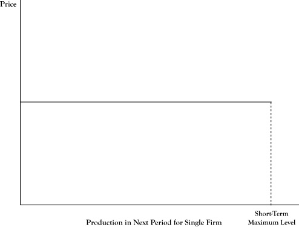
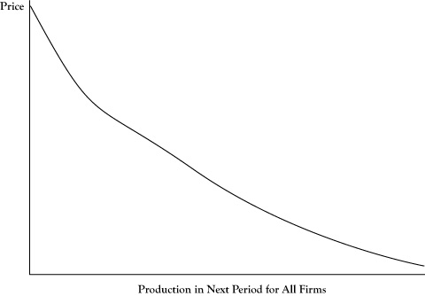

The consequence of the preceding assumptions is that all exchanges in a perfectly competitive market will quickly converge to a single price. Since the good is viewed as being of identical quality and utility, regardless of the seller, and the buyers have perfect information about seller prices, if one seller is charging less than another seller, no buyer will purchase from the higher priced seller. As a result, all sellers that elect to remain in the market will quickly settle at charging the same price.
In Chapter 2 "Key Measures and Relationships" and Chapter 3 "Demand and Pricing", we examined the demand curves seen by a firm. In the case of the perfect competition model, since sellers are price takers and their presence in the market is of small consequence, the demand curve they see is a flat curve, such that they can produce and sell any quantity between zero and their production limit for the next period, but the price will remain constant (see Figure 6.1 "Flat Demand Curve as Seen by an Individual Seller in a Perfectly Competitive Market").
It must be noted that although each firm in the market perceives a flat demand curve, the demand curve representing the behavior of all buyers in the market need not be a flat line. Since some buyers will value the item more than others and even individual buyers will have decreasing utility for additional units of the item, the total market demand curve will generally take the shape of a downward sloping curve, such as Figure 6.2 "Demand Curve as Seen for All Sellers in a Market".
Figure 6.1 Flat Demand Curve as Seen by an Individual Seller in a Perfectly Competitive Market
Any amount the firm offers for sale during a production period (up to its maximum possible production level) will sell at the market price.
The downward sloping nature of the market demand curve in Figure 6.2 "Demand Curve as Seen for All Sellers in a Market" may seem to contradict the flat demand curve for a single firm depicted in Figure 6.1 "Flat Demand Curve as Seen by an Individual Seller in a Perfectly Competitive Market". This difference can be explained by the fact that any single seller is viewed as being a very small component of the market. Whether a single firm operated at its maximum possible level or dropped out entirely, the impact on the overall market price or total market quantity would be negligible.
Although all firms will be forced to charge the same price under perfect competition and firms have perfect information about the production technologies of other firms, firms may not be identical in the short run. Some may have lower costs or higher capacities. Consequently, not all firms will earn the same amount of profit.
Figure 6.2 Demand Curve as Seen for All Sellers in a Market
Although one seller sees a fixed price for its supply, if all sellers were to increase production, the maximum price that customers would pay to buy all the units offered would drop.
As described in the description of the shutdown rule in Chapter 2 "Key Measures and Relationships", some firms only operate at an economic profit because they have considerable sunk costs that are not considered in determining whether it is profitable to operate in the short run. Thus not only are there differences in profits among firms in the short run, but even if the market price were to remain the same, not all the firms would be able to justify remaining in the market when their fixed costs need to be replenished, unless they were able to adapt their production to match the more successful operators.